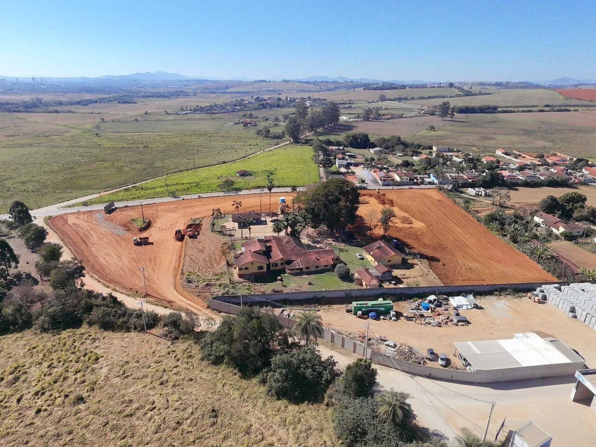
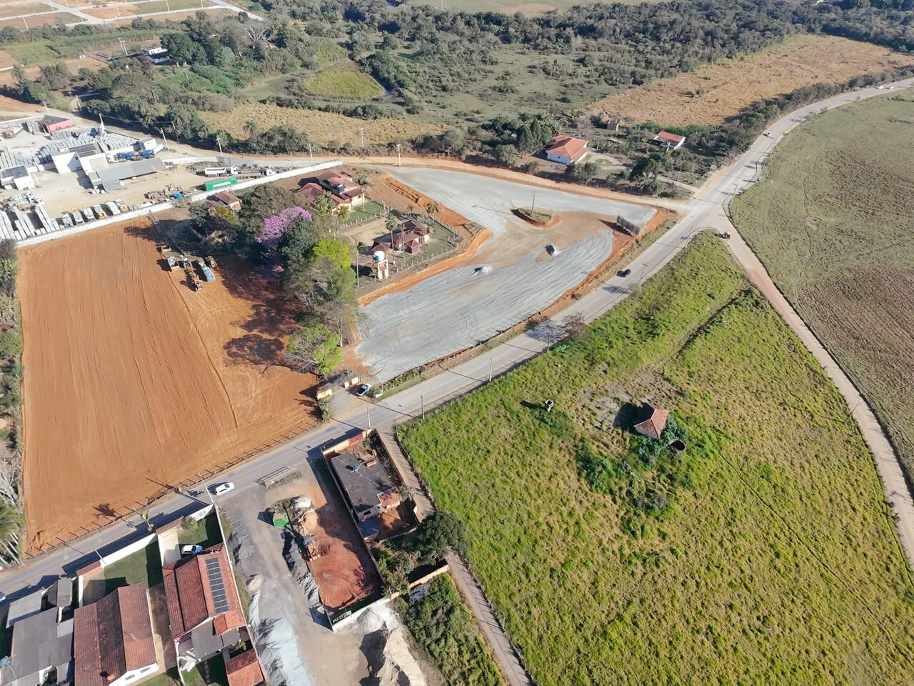

O entorno já mudou. E tem mais vindo.
Na régua, cada marco no seu ano: três obras entregues desde 2019, dois anúncios em 2026 e o que vem pela frente.
O imóvel também mudou.



Fotos do proprietário durante a preparação do pátio, sem data exata.